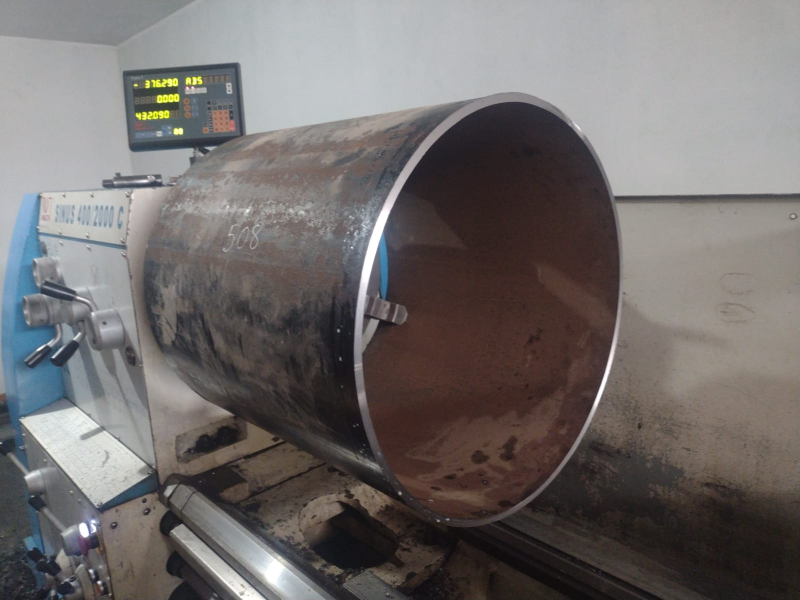
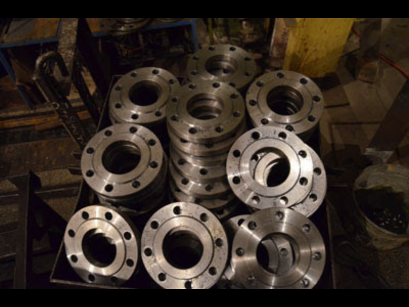
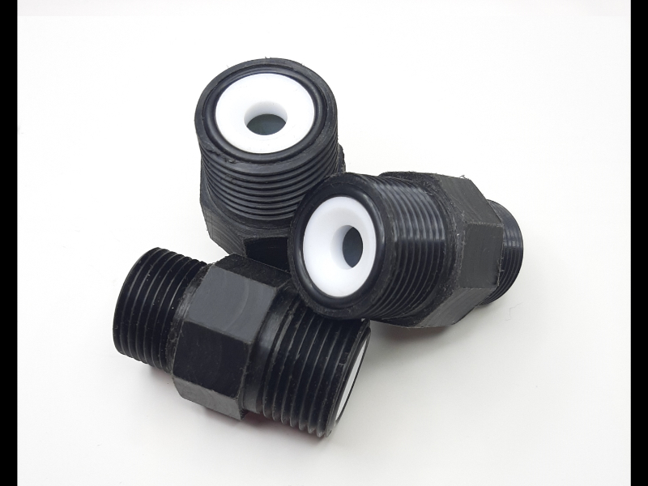
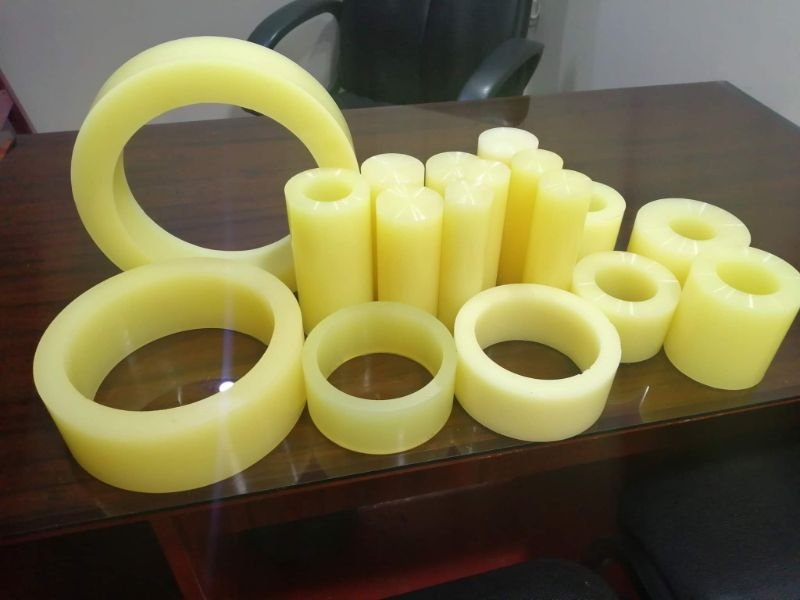
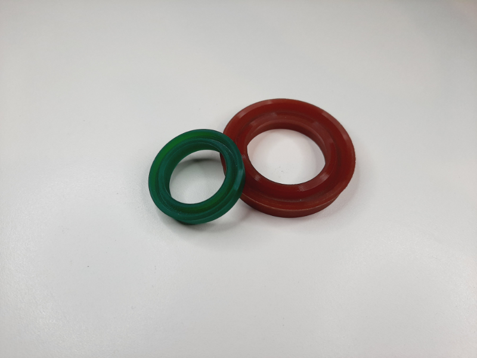
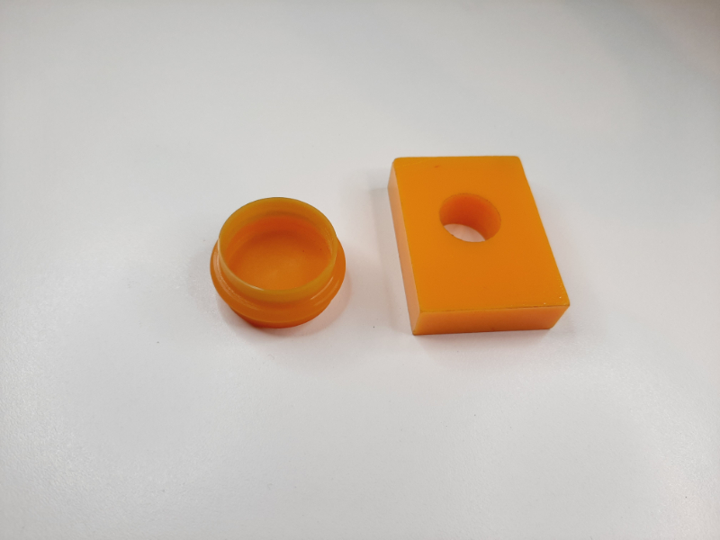

Trabajos realizados
Piezas fabricadas y procesos ejecutados en nuestro taller de Paucarpata.
01 — Mecanizado
Torneado y fresado







02 — Poliuretano
Revestimiento y piezas en poliuretano
Recuperamos ruedas y rodillos desgastados con revestimiento de poliuretano, y fabricamos bocinas, sellos y placas a medida.




¿Tienes una pieza parecida?
Envíanos el plano, la muestra o la pieza desgastada y te preparamos una cotización.